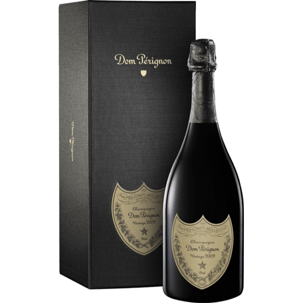

<!DOCTYPE html>
<html lang="es">
<head>
    <meta charset="UTF-8">
    <meta http-equiv="X-UA-Compatible" content="IE=edge">
    <meta name="viewport" content="width=device-width, initial-scale=1.0">
    <title>Nuestros Espumantes</title>


    

                <!-- Fonts -->

    <link href="https://fonts.googleapis.com/css2?family=Gentium+Plus&family=Indie+Flower&family=Oregano:ital@1&display=swap" rel="stylesheet">
    <link href="https://fonts.googleapis.com/css2?family=Emilys+Candy&family=Gentium+Plus&family=Indie+Flower&family=Oregano:ital@1&display=swap" rel="stylesheet">
                <!-- Link css -->
    <link rel="stylesheet" href="../estilos/estilos.css">
</head>
</html>


<body>
    <header>

        <h1 class="titulo">Elexir</h1>
            
        <h2 class="subtitulo">Wines & Deli</h2>
    
        <nav class="menu">
            <ul>
                <li><a href="../index.html"a>Home</a></li>
                <li><a href="vinos.html"a>Vinos</a></li>
                <li><a href="espumantes.html"a>Espumantes</a></li>
                <li><a href="delicattessen.html">Delicattessen</a></li>
                <li><a href="contacto.html"a>Contacto</a></li> 
            </ul>
        </nav>
    </header>
    <div>
        <h2 class="parrafoimp">Vinos Espumantes</h2>
        <div><section> </section></div>
        <h3 class="parrafoimp" >Los vinos espumantes o espumosos son un producto obtenido mediante primera o segunda fermentación de uvas frescas, de mosto de uva o de vino que, al descorchar el envase, desprende dióxido de carbono procedente exclusivamente de la fermentación.</h3>
        <p class="parrafoimp">Dom Pérignon está considerado como uno de los champagnes más valorados y prestigiosos del mundo.Se elabora el según el método champenoise, que consiste en fermentar por segunda vez el vino cuando éste ya está en su botella, añadiendo en la fermentación, levadura y azúcares. El champagne Dom Perignon cuenta además, con un porcentaje de Pinot Noir que se ha transforma en vino en tinto. En este champagne el tiempo mínimo de envejecimiento en botella es de 12 meses.
        </p>
    </div>

    <footer>
        <h2>Seguinos en</h2>
        <h3>Facebook</h3>
        <h3>Instagram</h3>
        <h3>Twitter</h3>
    <br>
        <h4>Copyright © 2018 - Diseño Web realizado por Della Maggiore Iván</h4>
    </footer>
    
</body>
<br>

